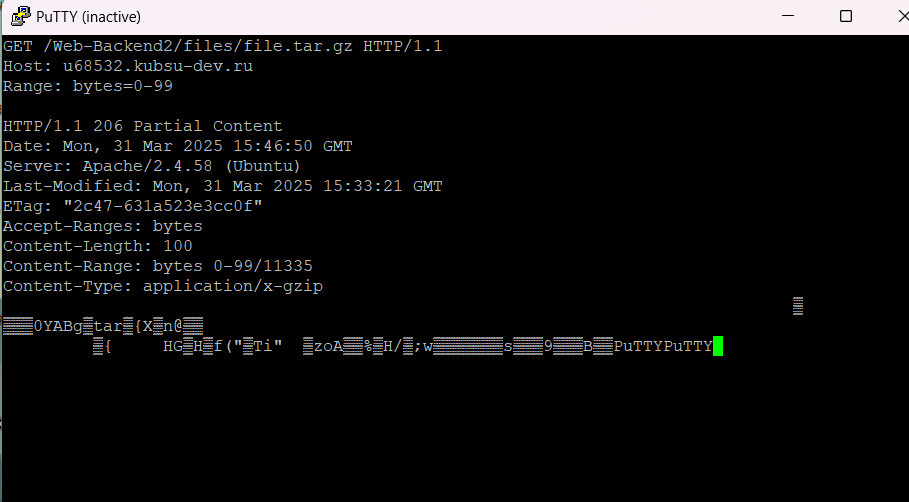

С помощью Putty подключаемся к учебному серверу

C помощью метода GET получаем главную страницу в протоколе HTTP 1.0
C помощью метода GET получаем внутреннюю страницу в протоколе HTTP 1.1
C помощью метода HEAD определяем размер файла file.tar.gz. Размер файла в байтах содердиться в заголовке Content-Length

C помощью метода HEAD определим медиатип image.png. Он содержится в заголовке Content-Type

C помощью метода POST отправим комментарий на сервер по адресу index.php

C помощью метода GET получим первые 100 байт файла file.tar.gz

C помощью метода HEAD определим кодировку ресурса index.php. Она содержиться в заголовке Content-Type в значении charset